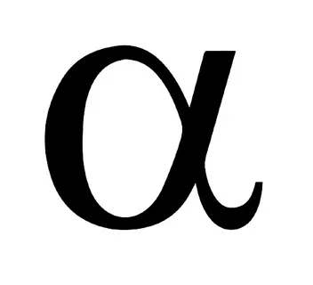
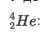

Содержание
- Понятие радиоактивности
- История открытия явления радиоактивности
- Опыты Резерфорда
- Закон радиоактивного распада ядер
- Период полураспада
Понятие радиоактивности
Почти 90 % из 2500 известных атомных ядер нестабильны. Нестабильное ядро самопроизвольно превращается в другие ядра с испусканием частиц. Это свойство ядер называется радиоактивностью. Радиоактивность самопроизвольное превращение нестабильного ядра в другие ядра, сопровождающееся испусканием частиц. У больших ядер нестабильность возникает вследствие конкуренции между притяжением нуклонов ядерными силами и кулоновским отталкиванием протонов. Стабильных ядер с зарядовым числом Z>83 и и массовым числом А>209 не существует. Но радиоактивными могут оказаться и ядра атомов с существенно меньшими значениями чисел Z и А. Если ядро содержит значительно больше протонов, чем нейтронов, то нестабильность обусловливается избытком энергии кулоновского взаимодействия. Ядра, которые содержат избыток нейтронов, оказываются нестабильными вследствие того, что масса нейтрона превышает массу протона. Увеличение массы ядра приводит к увеличению его энергии.
История открытия явления радиоактивности
Явление радиоактивности было открыто в 1896 г. французским физиком А. Беккерелем, который
обнаружил, что соли урана испускают неизвестное излучение,
способное проникать через непрозрачные для света преграды и вызывать почернение фотоэмульсии.
Через два года французские физики М. и П. Кюри обнаружили радиоактивность тория и открыли два новых
радиоактивных элемента — полоний и радий.
В последующие годы исследованием природы радиоактивных излучений занимались многие физики,
в том числе Э. Резерфорд и его ученики. Было выяснено, что радиоактивные ядра могут испускать частицы
трёх видов: положительно и отрицательно заряженные и нейтральные. Эти три вида излучений были
соответственно названы -,
-  ,
-
излучениями. В магнитном поле - и
- лучи испытывают отклонения в
противоположные стороны, причём –
лучи отклоняются значительно больше. - лучи
в магнитном поле вообще не отклоняются.
,
-
излучениями. В магнитном поле - и
- лучи испытывают отклонения в
противоположные стороны, причём –
лучи отклоняются значительно больше. - лучи
в магнитном поле вообще не отклоняются.
Оказалось, что - -излучение —
это поток ядер
 атомов гелия , -
излучение — поток быстрых электронов , а
- –излучение — поток квантов электромагнитного излучения высокой частоты.
Эти три вида радиоактивных излучений сильно отличаются друг от друга
по способности ионизировать атомы вещества и, следовательно,
по проникающей способности.
Наименьшей проникающей способностью обладает
-излучение. В воздухе
при нормальных условиях -
лучи проходят путь в несколько сантиметров; -лучи гораздо меньше поглощаются
веществом, они способны пройти через слой алюминия толщиной в несколько
миллиметров. Наибольшей проникающей способностью обладают -лучи,
способные проходить через слой свинца толщиной см.
Опыты Резерфорда

Рис. 1. Опыты Резерфорда
В 1911 году Э. Резерфорд провёл опыты по бомбардировке золотой фольги
положительно заряженными альфа-частицами (рис. 1). Оказалось,
что большинство альфа-частиц проходит сквозь золотую фольгу практически без
заметного изменения направления движения.
Однако некоторые частицы отклонялись от первоначального направления на
значительные углы и даже отбрасывались назад. Результаты опыта позволили
сделать вывод о том, что рассеяние положительно заряженных альфа-частиц
может быть вызвано положительно заряженными частицами,
находящимися внутри атома — атомным ядром. Размеры атомного ядра
чрезвычайно малы, но в нём сосредоточены почти вся масса и весь
положительный заряд атома.
Чем ближе альфа-частица подходила к ядру, тем большая
сила электростатического взаимодействия действовала на неё и тем
на больший угол частица отклонялась.
Перечисленные открытия и опыты по бомбардировке золотой фольги положительно
заряженными альфа-частицами позволили Резерфорду создать так называемую
«планетарную» модель атома.
Резерфорд предположил, что в центре атома содержится ядро,
в котором сосредоточен весь положительный заряд и практически
вся масса атома; вокруг ядра подобно планетам
Солнечной системы вращаются отрицательно заряженные электроны.
Радиус ядра в
тысяч раз меньше радиуса всего атома.
Во втором десятилетии XX в., после открытия Э. Резерфордом ядерного строения атомов, было твёрдо установлено,
что радиоактивность — это свойство атомных ядер.
Радиоактивное излучение всех видов (альфа, бета, гамма, нейтроны), а также электромагнитная радиация (рентгеновское излучение) оказывают очень
сильное биологическое воздействие на живые организмы, которое заключается в процессах возбуждения и ионизации атомов и молекул, входящих в состав
живых клеток. Под действием ионизирующей радиации разрушаются сложные молекулы и клеточные структуры, что приводит к лучевому поражению организма.
Поэтому при работе с любым источником радиации необходимо принимать все меры радиационной защиты
людей, которые могут попасть в зону действия излучения.
Закон радиоактивного распада

где N0 — первоначальное число радиоактивных (родительских) ядер атомов (в момент времени ); N — число нераспавшихся радиоактивных (родительских) ядер атомов (в момент времени ); N0-N — число распавшихся радиоактивных (дочерних) ядер атомов (в момент времени ); T — период полураспада (время, в течение которого распадается половина первоначальных ядер атомов).
| Коичество бросаний n=t/T | Количество "нераспавшихся" монет, N теоретическое | Количество "нераспавшихся" монет, N экспериментальное |
|---|---|---|
| 0 | 128 | 128 |
| 1 | 64 | 62 |
| 2 | 32 | 30 |
| 3 | 16 | 18 |
| 4 | 8 | 10 |
| 5 | 4 | 6 |
| 6 | 2 | 4 |
| 7 | 0 | 2 |
| 8 | 0 | 0 |
Период полураспада
Период полураспада - основная величина, характеризующая скорость процесса. Чем меньше период полураспада, тем интенсивнее протекает распад. Так, для урана период полураспада примерно 4,5 млрд лет, а для радия примерно 1600 лет. Поэтому активность радия значительно выше, чем урана. Существуют радиоактивные элементы с периодом полураспада в доли секунды. Скорость радиоактивного распада характеризуется активностью А. По определению,

что понятно, ведь число N с течением времени уменьшается.